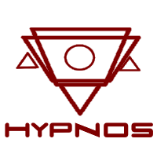
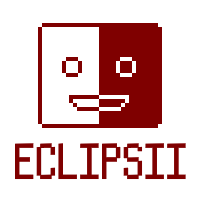
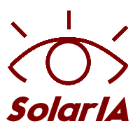

Aquí podrás encontrar todos los proyectos en los que el Instituto ha trabajado durante los últimos años.
También encontrarás sneak peeks de algunos proyectos aún en desarrollo.

Un sistema operativo que funcionaba dentro de los sueños y la mente de las personas. Pese a que la idea fuera revolucionaria, los altos costes, opiniones negativas y dificultades acabaron rápidamente con el proyecto. Aún así, sirvió para darnos a conocer y como aprendizaje.

En el auge de las mascotas virtuales, aportamos nuestro granito de arena, y creamos a Eclipsii, nuestra pequeña mascota. Además de las habituales mecánicas (comida, diversión...) también se relacionaba con el clima, la hora del día, las posiciones estelares, etc. Aunque tuvo una buena recepción, el tiempo terminó por volverla obsoleta.

Nuestro siguiente proyecto. Hoy en día, las IAs, aunque intenten esconderlo, son máquinas insensibles. Queremos dar el siguiente paso, crear Inteligencia Real. Una IA capaz de sentir como nosotros, de reír, de llorar. Y de acompañar a aquellos que lo necesiten.